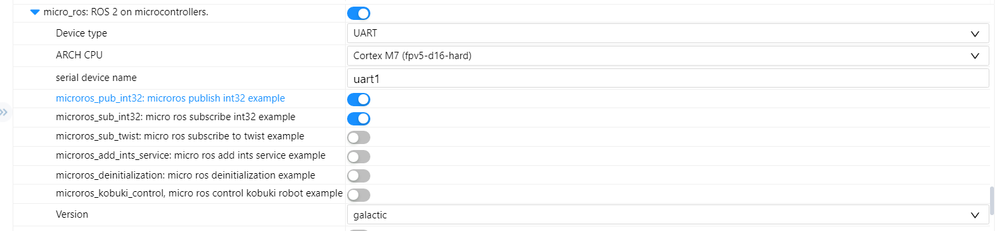

Week 1
2022/07/04 - 2022/07/10
上周问题
- 单片机和ROS2 无法连接
上周会议给出的原因和建议：
- 原因
- 使用虚拟机，导致数据多次转发，可能存在数据延迟问题；
- docker版本过旧；
- 建议：
- 使用WSL或者双系统；
- 安装新版本的docker；
- 使用串口作为测试；
本周工作
- 在window上基于RT-Thread Studio和art-pi构建micro ros (串口)工程；
- 在Ubuntu上构建
micro-ros-agent( docker & Vulcanexus)
docker
版本：20.10.17
# 运行micro-ros-agent：本地
docker run -it --net=host microros/micro-ros-agent:galactic udp4 -p 8888
# 运行micro-ros-demos
sudo docker run -it --net=host microros/micro-ros-demos bash
source install/local_setup.bash
ros2 run micro_ros_demos_rclc int32_publisher
# 查看话题
ros2 topic list
ros2 topic echo /std_msgs_msg_Int32
可以看到话题，说明micro-ros-agent没有问题
# 运行micro-ros-agent
docker run -it -v /dev:/dev --privileged microros/micro-ros-agent:galactic serial --dev /dev/ttyUSB0
# docker run -it -p 9999:9999/udp --privileged microros/micro-ros-agent:galactic udp4 -p 9999
# 单片机
microros_pub_int32
结果：
# ubuntu
[1657365773.777815] info | TermiosAgentLinux.cpp | init | running... | fd: 3
[1657365773.778163] info | Root.cpp | set_verbose_level | logger setup | verbose_level: 4
[1657365857.374839] info | Root.cpp | create_client | create | client_key: 0x10176887, session_id: 0x81
[1657365857.375037] info | SessionManager.hpp | establish_session | session established | client_key: 0x10176887, address: 0
[1657365858.394287] info | ProxyClient.cpp | create_participant | participant created | client_key: 0x10176887, participant_id: 0x000(1)
# 单片机
[micro_ros] node created
[micro_ros] publisher created
[micro_ros] timer created
[micro_ros] executor created
[micro_ros] New thread mr_pubint32
micro_ros 软件包配置

Vulcanexus
# agent 测试
ros2 run micro_ros_agent micro_ros_agent udp4 -p 8888
# demos 测试
sudo docker run -it --net=host microros/micro-ros-demos bash
source install/local_setup.bash
ros2 run micro_ros_demos_rclc int32_publisher
可以看到话题，说明基于Vulcanexus安装的micro-ros-agent没有问题
# 运行micro-ros-agent
ros2 run micro_ros_agent micro_ros_agent serial -D /dev/ttyUSB0
# 单片机
microros_pub_int32
结果和 docker一致。
结果 & 问题
结果：单片机和ROS2 无法连接的问题没有解决。从结果上来看，还是create_topic没有成功。
目前micro ros agent运行在双系统的Ubuntu上，应该不存在数据多次转化。目前猜想是不是单片机端配置有问题。